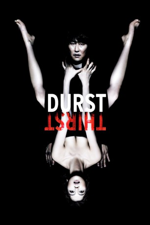
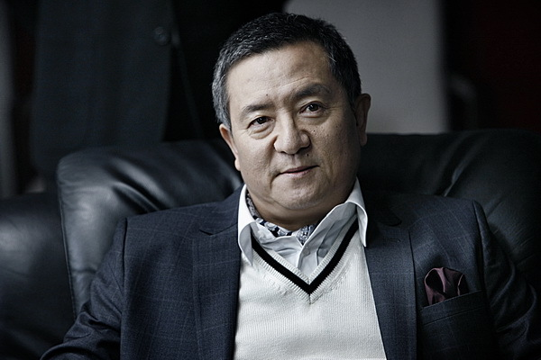

#4063 Durst
Alternativ: Thirst (Englischer Titel)
 
 IMDB-Wertung: 7.1 / 10
IMDB-Wertung: 7.1 / 10  Metascore: 0
Metascore: 0 
Der katholische Pater Sang-hyeon arbeitet aufopferungsvoll in einem Krankenhaus, wo er den Kranken und den Sterbenden Trost spendet. Doch das ist ihm nicht genug. Um einen noch größeren Beitrag zur Heilung von Kranken leisten zu können, reist er nach Afrika, um sich als Versuchsperson für die Suche nach einem Heilmittel gegen das tödliche Emmanuel-Virus zur Verfügung zu stellen. Er wird mit dem Virus infiziert, doch das verabreichte Gegenmittel versagt. Auch eine schnell eingeleitete Notoperation mit Bluttransfusion kann den Pater nicht mehr retten – er stirbt noch auf dem Operationstisch. Dann geschieht das Wunder: Sang-hyeon kehrt in den Kreis der Lebenden zurück. Doch er ist nicht mehr derselbe, denn das frische Blut in seinen Adern stammt von einem Vampir.
Jahr: 2009
Dauer: 134 Minuten
FSK: 16
Land: Süd-Korea Studio: MFA FilmdistributionTonspuren:
Untertitel: Deutsch,
Auflösung: 1080p (1920x816) Größe: 6594 MB
Genre: Fantasy, Horror
Regisseur: Chan-wook Park
Drehbuch: Matthew Vaughn
Soundtrack:
Darsteller:
 Kang-ho Song als Priest Sang-hyeon
Kang-ho Song als Priest Sang-hyeon- Ok-bin Kim als Tae-ju
- Hae-suk Kim als Lady Ra
- Ha-kyun Shin als Kang-woo
- Dal-su Oh als Yeong-doo
-  Young-chang Song als Seung-dae
- Mercedes Cabral als Evelyn
 Eriq Ebouaney als Immanuel
Eriq Ebouaney als Immanuel- Woo-seul-hye Hwang als Girl with a whistle
- In-hwan Park als Priest Noh
- Hee-jin Choi als Nurse
- Hwa-ryong Lee als Professor Ku
- Mi-ran Ra als Nurse Yu
Datei: X:\HD-Eastern-Modern(A-M)\Durst (2009, FSK16, 1920x816).mkv seit 18.07.2016
Festplatte: HD Eastern+Western
 Es gibt insgesamt 104 Filme in der Gruppe 'HD-Eastern-Modern(A-M)'
Es gibt insgesamt 104 Filme in der Gruppe 'HD-Eastern-Modern(A-M)'